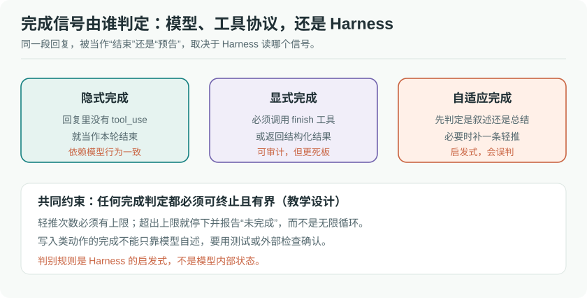
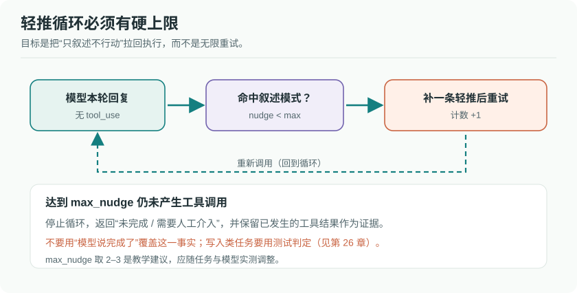

Harness 完成模式：谁来判断“做完了”
把“完成”当成 Harness 的一个显式决策来设计：比较隐式、显式与自适应完成信号，用有界轻推处理“只叙述不行动”，并守住可核实的证据边界。
“模型说做完了”为什么不可靠
一个自动修 lint 错误的 Agent 可能跑了一小时，只在前面真的改过文件，后面一直在用自然语言“分析”和“总结”。如果 Harness 把“模型不再调用工具”直接当成完成，它就会把一个只写了总结、没写代码的会话报成成功。完成判定不是附属细节，而是决定 Agent 能不能在真实世界跑的核心设计。
本章只讨论一件事：Harness 读哪个信号来结束循环。先说明证据口径：
- 官方公开契约：一次 Messages 响应会带
stop_reason；客户端的工具循环用它是读到tool_use还是end_turn来决定是否继续（见官方 Tool Use 概览）。 - 可观察行为：在我们自己的请求日志里，能直接看到每轮有没有 tool_use、停止原因是什么。
- 教学设计：轻推阈值、叙述/总结的判别规则都是启发式，属于 Harness 自己写的代码，不是模型内部状态。
三种完成信号与判定位置
把“完成”拆成三种信号，可以看出差别在于谁在判定：
- 隐式完成：只要模型不再发出工具调用，Harness 就当本轮结束。它把判定权交给模型的行为一致性。
- 显式完成：要求模型必须调用一个
finish工具或返回结构化结果，Harness 才结束。可审计，但更死板。 - 自适应完成：Harness 先判别模型是在“叙述计划”还是“总结结果”，必要时补一条轻推。

官方契约：stop_reason 只描述一次响应
Tool Use 的基本循环在官方文档里很清楚：模型返回带 tool_use 的内容块时，客户端执行工具、把 tool_result 追加回消息历史，再请求一次；当停止原因是 end_turn 时，本轮对话结束。注意：stop_reason 描述的是这一次响应为什么停下，它不声称任务目标已经达成。
while True:
resp = call_model(messages)
if resp.stop_reason == "tool_use":
results = run_tools(resp.content) # 执行工具
messages.append({"role": "user", "content": results})
continue
# end_turn：模型不再要求工具，但这不等于“任务成功”
return resp把“停止”与“成功”分开
循环结束只说明模型不再要工具，属可观察行为。完成质量的应用层判定（测试是否通过、文件是否真的改了）必须单独做，见第 26 章的 Default-FAIL 契约。
自适应轻推与它的边界
自适应完成的核心是一个轻推检测器：当回复没有工具调用、且命中“将来时叙述”模式（如 “I'll …”、“接下来 …”）时，补一条“请直接执行下一步”的消息并重新请求。它把“预告”与“总结”区分开来。
但判别只是字符串启发式，会误判：真正在总结的回复也可能包含 “I'll” 之类的词。因此必须加两个安全阀：轻推次数上限与仅在确实已经行动过之后才轻推。下图给出一个可终止的轻推循环：

max_nudge 仍无工具调用时，如实报告“未完成”，不用模型自述覆盖。权衡表：没有免费的模式
下面只做定性比较，不给未经核实的百分比或 token 绝对值：
| 模式 | 判定依据 | 优点 | 风险 |
|---|---|---|---|
| 隐式完成 | 无 tool_use 即结束 | 实现最短，不额外请求 | 模型偏“先叙述”时易假完成 |
| 显式完成 | 必须调 finish 工具 | 可审计、可拦截 | 模型可能忘调或误调 |
| 自适应完成 | 叙事/总结判别 + 轻推 | 对不同模型更鲁棒 | 判别误报、轻推增加回合 |
| 自优化 Harness | 用验证集调参数 | 免手工调参，上限更高 | 需额外验证基础设施 |
选择取决于你的模型组合与验收方式：单一、行为稳定且“行动导向”的模型适合隐式完成；多模型或开源模型建议自适应；需要严格审计时用显式完成+测试门禁。
把“未完成”如实报告出去
一个诚实的 Harness 宁可报“未完成”，也不把“模型说了完成”当成成功。落地时应遵守三条纪律：
- 轻推次数、总回合数都有硬上限，超限就停。
- 写入类任务的完成由外部检查判定（运行测试、校验产物），不靠模型自述。
- 把“停止原因、已执行工具、未完成事项”一起写进会话日志，这是可观测性的基础（见第 23 章）。
被移除的不可核实主张
旧稿引用了“Arize AI 2026 年对比实验”的具体 token 与正确率表、“Lee et al. arXiv 2603.28052 提升 +7.7 点/上下文减少约 4 倍”以及“harness-forge 75 行参考实现”。这些数字与引文无法从可得的版本化公开来源核对，因此本章不再引用为事实，只保留“用验证集调参”这类可验证的方法论描述。
离线测试与练习
运行 python3 -m unittest discover -s examples -p 'test_*.py'，并给完成判定写一组小测试：叙述型回复在已经行动过时触发轻推；超过上限后循环必须终止并返回“未完成”；写入类任务只有在外部检查通过才记为成功。
官方资料与被移除的主张
- Anthropic: Tool Use overview — tool_use/tool_result 循环与 stop_reason
- Anthropic: Messages API — 响应中的 stop_reason 字段
- Claude Code: Overview — Harness 产品能力边界
本章不引用无法核实的第三方对比数据与论文编号；涉及阈值与判别规则均为 Harness 侧的教学示例，不是官方固定行为。